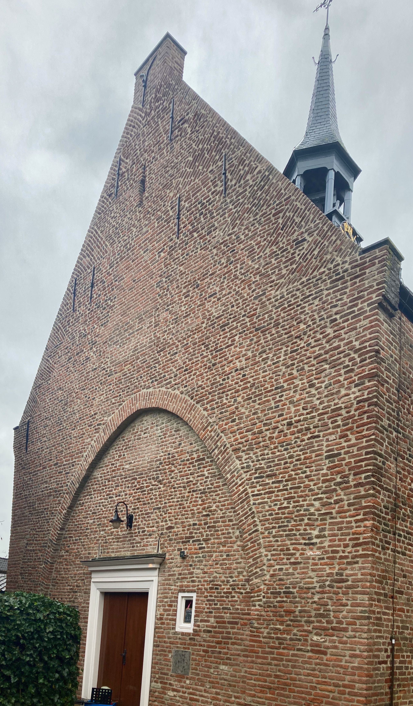

Maandelijkse Studiedag Hildegard von Bingen:
Samen met andere vrouwen zingen en bestuderen van composities van Hildegard von Bingen.
Doelgroep:
Liefhebbers vanaf halfgevorderd niveau tot en met professionals, alleen vrouwen (sorry heren).
Aantal deelnemers:
Minimaal 2 (dan werken we korter), maximaal 15, uiterlijk de woensdag tevoren aanmelden via Marsja (klik hier).
Datum:
Elke maand werken we afwisselend een zaterdagochtend van circa 10:00 tot uiterlijk 13:00, of een zondagmiddag van circa 13:30 tot uiterlijk 16:30 uur, met een korte pauze. Kijk in de agenda voor de geplande studiedagen.
Kosten:
De kosten voor deelname zijn afhankelijk van het aantal deelnemende personen. In een klein groepje leert u immers intensiever dan in een grote groep. De bedragen varieren van minimaal 30 Euro (grote groep) tot 67,50 Euro (2 of 3 mensen) per persoon. U krijgt een digitaal betaalverzoek of een factuur achteraf.
Omschrijving:
Hildegard von Bingen (1098-1179) was een kloosterlinge en magistra met vele kwaliteiten, waarvan componeren er een was. Haar muziek wordt gekenmerkt door een grotere vrijheid en omvang in de melodieën dan het gregoriaans van haar tijd. Ook de teksten van haar liederen vertonen een enorme rijkdom in beelden en betekenislagen. Die combinatie maakt haar oevre zo fascinerend dat er een maandelijkse studiedag aan wordt gewijd.
De manier van werken is volgens de mondelinge overlevering, zoals in Hildegard’s tijd ook gebruikelijk was. Marsja spreekt en zingt voor, de deelneemsters doen het na, enzovoort. Als hulpmiddelen worden de uitgeschreven tekst en vertaling gebruikt, die we van tevoren goed bestuderen. Daarnaast wordt gebruik gemaakt van handgebaren die worden herleid uit de oorspronkelijke notatie van deze muziek, die is overgeleverd in handschriften uit haar tijd. Indien nodig worden kopieën uit de handschriften en een eenvoudige transcriptie zonder ritme verstrekt. Ook kunnen geluidsopnames worden gebruikt om het studeren te vergemakkelijken.
Op dit moment is studie het doel. In een later stadium zou uitvoering ook een doel kunnen worden, afhankelijk van de mogelijkheden en behoefte van de deelneemsters.